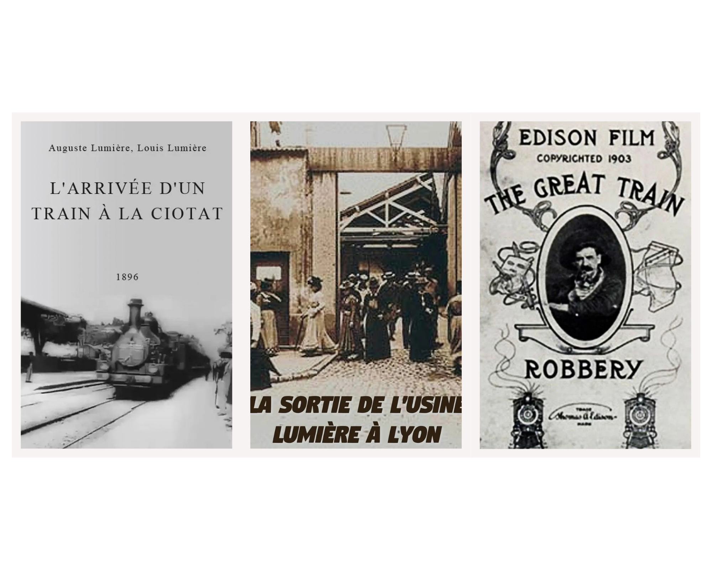
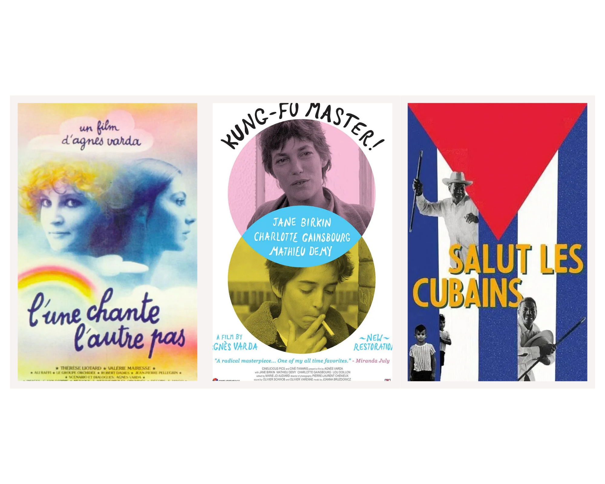
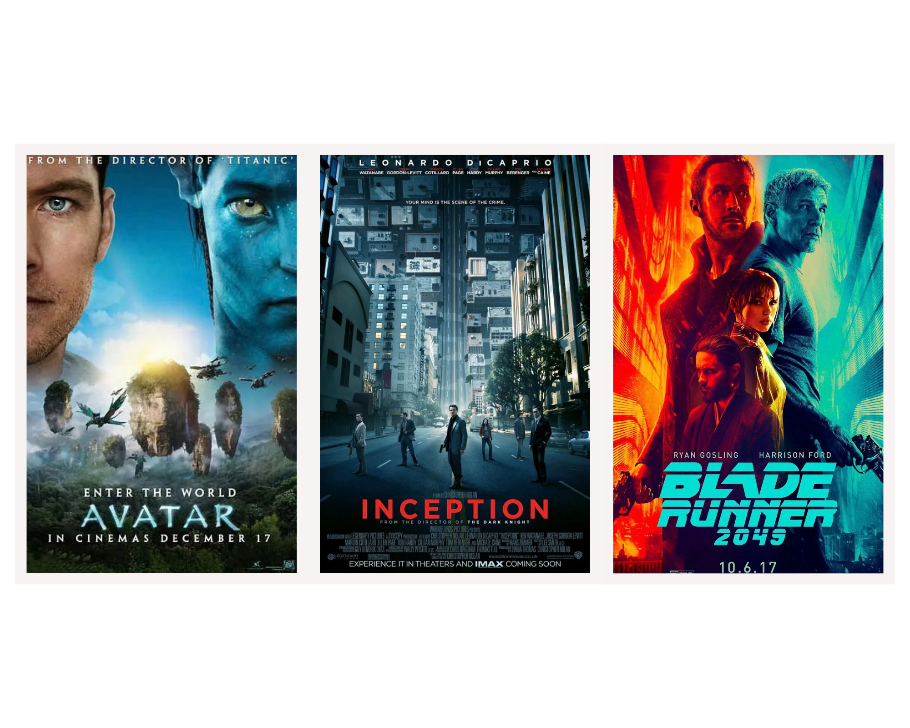

Documentation
1. Introduction
The Live Museum of Movie Locations (LMML), Rome Cinema Walk, is an interactive web application that explores the cinematic geography of Rome. Developed for the Information Modeling and Web Technologies course in the Digital Humanities and Digital Knowledge (DHDK) Master's degree program at the University of Bologna. The project chooses Rome, the city deeply beloved by both group members and by the artists across time, as the starting point to examine how physical locations interact with cinematic scenes. With 20 monumental landmarks and 6 iconic films spanning 70 years (from 1953 to 2023), LMML provides a multi-layered journey that caters to children, adult tourists and academic researchers or cinephiles.
What the site contains. The application offers one landing home page and three subpages: a Map Overview that lays out all the locations on an interactive Leaflet map with a photographic filmstrip index; an Tour that walks visitors through each location one at a time along one of four curated narrative routes; and a merged About page collecting the project's documentation, source disclaimer, and team credits. Four selectable visual themes and four selectable narrative routes recombine freely across all 20 locations.
2. Project Architecture
LMML is deliberately built as a lightweight, static application. The necessary external dependencies are loaded at runtime: the Leaflet mapping library with CARTO Voyager map tiles, and the api.qrserver.com service that renders the QR codes. Presentation, behavior and data are kept in separate files:
- index.html: the landing page that illustrate main idea of the project, leading users to choose among different routes.
- tour.html: the application shell that carries three view panels (Map Overview, Tour, About), shown or hidden by CSS rules keyed to
data-view. - css/style.css: all presentation, organized around the variable
--t-*. Different themes are switchable by selecting matched attribute names. - js/data.js: the data layer loaded by the page, including
locations(20 records with coordinates, semantic metadata, film appearances and the nine text fields) andnarratives(the four routes: timeline, city tour, art tour, cinema tour, each an ordered list of location ids). - js/tour.js: all behavior, wrapped in one self-contained function: a
stateobject (current view, theme, route, location, text levels), the Leaflet map and the filmstrip index, the text-synthesis engine that joins the three text axes, and QR-code generation. - data/lmml-metadata.jsonld: the source of the descriptive metadata: places, films and film appearances as Linked Data.
- data/site-content.json: the page-only content that is not descriptive metadata: the nine reading texts of every location and the four narrative routes.
- tools/build-data.js: a small Node script that merges the two data files into
js/data.js.
3. Reference Sources & Metadata Structure
Featuring locations from

Roman Holiday

La Dolce Vita

The Talented Mr. Ripley

To Rome with Love

La Grande Bellezza

C'è ancora domani
The system operates on an object-oriented, highly structured unified metadata architecture defined in data/lmml-metadata.jsonld and data/site-content.json and compiled into data.js. This data layer fulfills the strict Rich, Structured, Typed, and Uniform (RSTU) design constraints.
Each of the 20 objects in the locations array in data.js follows the same fixed schema. The table below documents every field, grouped by the sub-object it belongs to:
| Field | Type | Description | Example |
|---|---|---|---|
id | Number | Unique identifier for the location. | 1 |
name | String | Display name of the location. | "Terme di Caracalla" |
coordinates | Array [lat, lng] | Geographic coordinates. | [41.8792, 12.4926] |
address | String | Full street address, also used to build the Google Maps QR deep link. | "Viale delle Terme di Caracalla, 52, 00153 Roma RM" |
openingHours | String | Visiting hours shown in the On-Site block. | "9:00–19:00 (closed Mondays)" |
builtYear / builtYearLabel | Number / String | Construction year. | 216 / "AD 216" |
builtEra | String (enum) | Historical era. | "ancient" |
imageUrl | String | Path to the location's main profile photograph. | "img/locations/Baths_of_Caracalla.jpg" |
semanticMetadata.locationContext | Object | Schema.org-aligned descriptive block: officialNameIT, officialNameEN, featureType, architecturalStyle. | featureType: "Ancient Roman Public Baths" |
appearances[] | Array of Objects | One entry per film the location appears in: movieTitle, director, year, scene, specificImageUrl, cameraOrientation. | movieTitle: "La Dolce Vita" |
content | Object | The three step-lengths of narrative text. | content.brief |
tone | Object | The three voice variants selected by the Audience Tone axis. | tone.scholar |
competence | Object | The three framing levels stepped by the Competence Level axis. | competence.advanced |
Vocabulary alignment. Schema.org is the primary vocabulary because it already covers places, films, and the act of filming at a place (FilmAction). Dublin Core Terms is used only for the construction date, and SKOS is used for the four era buckets. Customised lmml: namespace are used instead where no standard term fits.
| Data fields | Terms in Jsonld | Vocabulary |
|---|---|---|
| Location (object) | LandmarksOrHistoricalBuildings + TouristAttraction | Schema.org |
id, name, official IT/EN names | identifier, name, alternateName | Schema.org |
coordinates, address, imageUrl | geo → GeoCoordinates, address, image | Schema.org |
builtYear | dcterms:created | Dublin Core Terms |
builtEra | lmml:builtEra → skos:Concept | SKOS + LMML |
featureType, architecturalStyle, openingHours, builtYearLabel | lmml:featureType, lmml:architecturalStyle, lmml:openingHoursNote, lmml:builtYearLabel | LMML |
appearances[] | FilmAction with object → Movie, location → Place, description, image | Schema.org |
cameraOrientation | lmml:cameraOrientation | LMML |
| Film title, director, year | Movie with name, director → Person, datePublished, locationCreated, sameAs | Schema.org |
Location profiles are compiled chiefly from Wikipedia entries for each landmark, cross-checked against official tourism and municipal listings; film-appearance details (director, year, scene description, filming locations) are compiled chiefly from each film's IMDb "Filming Locations" page.
4. Narratives & User Cases
Design intent: the 20 locations are offered through four narratives. A narrative changes the order and the framing of the visit, while each location’s profile and texts stay the same. Still, users with different ages, interests or goals can freely adjust the length and difficulty of the introductory texts.
Historical Timeline: All 20 locations by construction date, from the Roman Forum (509 BC) to the Auditorium Parco della Musica (2002), in three chapters: Antiquity to Middle Ages (8 stops), Renaissance to Mannerism (4) and Baroque to Contemporary (8). Presented as the default to illustrate how the city developed.
City Tour: Seven well-known attractions in one walking sequence to present the Iconic Rome, introducing Colosseo, Foro Romano, Piazza Venezia, Fontana di Trevi, Pantheon, Piazza Navona, Ponte Sant’Angelo. For first-time visitors with limited time.
Art Tour: Six museums, palaces and masterpieces of architecture, including Villa Borghese, Villa Medici, Piazza di Spagna, Palazzo Barberini, Musei Capitolini, Tempietto di Bramante. For art and architecture lovers.
Film Tour: The 11 locations that appear in the films at least twice, which are Parco degli Acquedotti, Terme di Caracalla, Colosseo, Foro Romano, Piazza Venezia, Piazza del Popolo, Piazza di Spagna, Fontana di Trevi, Piazza Navona, Ponte Sant’Angelo, Musei Capitolini. Designed for cinephiles or film researchers.
User cases: The three audiences of the brief are turned into three design personas, each combines a route with the three text settings of the Tour page.
| Persona | Goal | Suggested setup |
|---|---|---|
| Luca, 14, on a family holiday visiting Rome for the first time | Visit the places with his parents, exploring the iconic city spots. | City Tour; Kid tone, brief length, introductory language. |
| Emma, 38, cinephile for lifetime | Plan a free afternoon on foot, exited to return back to the settings of classic movies. | Film Tour; Adult tone, mid length, average language. |
| Max, 26, master’s student in art history | Understand how architecture, period and film use of a place relate. | Art Tour; Scholar tone, long length, advanced language. |
5. Layout Design & User Flow
Prototype Design in Figma


Refinements over the original Figma prototype. Some changes were made to the initial design during implementation. First, the Home page was expanded from a single "Begin Tour" entry point into two distinct interactive options, Map (browse all locations freely) and Tour (follow one of four narrative routes), so visitors commit to how they want to explore before ever leaving the landing page. Second, the content-level controls (Level of Detail, Audience Tone, Competence Level) were moved out of the top header and relocated inline within the content pane itself, next to the text they affect. This keeps the top navigation bar staying brief and user-friendly.
How that discipline plays out, and how a visitor moves between screens, differs by page:
- Home: A simple screen with background image, logo, title block, and a route-picker form offering either "Map" or one of four narrative routes via a dropdown. Selecting an option updates the "Begin Tour" call-to-action's destination live, so the visitor commits to a starting mode.
- Map: A two-pane screen consists of a vertical photographic filmstrip sidebar on the left, and the interactive Leaflet map filling the remainder. Clicking a filmstrip chip or a map marker jumps straight into the Tour view at that location, so this page functions as both an overview and an entry point. A Previous/Next bar under the map steps a highlighted stop through the active route.
- Tour: The primary content screen, split by the Golden Ratio
38.2%given to a map pane (showing the current stop with Previous/Next controls and a position counter) and61.8%to a scrollable content pane. Within the content pane the vertical flow is fixed across every location and every theme: Location Profile → Film Profile with introduction to the setting → the Three-Axis introductory passage → On-Site Practicalities (Google Maps QR code). On mobile, the two panes stack vertically instead of splitting horizontally. - About: A single scrollable page merging Documentation, Disclaimer, and About Us, switchable from the "About" dropdown in the top navigation. Two buttons at the very end of the page lead to the neighbouring pages: Previous returns to the Tour and Home returns to the landing page.
Across all pages, the main navigation bar (logo, Home/Map/Tour links, the About dropdown, and the Narrative/Theme dropdowns on the right) stays persistent. Changing the narrative route or the visual theme from anywhere immediately re-renders the Map and Tour views without reloading, so a visitor's place in the tour, their chosen route, and their chosen theme are preserved as they move between Map, Tour, and About.
6. CSS Theme Design — Four Cinematic Era Themes
The visual design are inspired by Film History, precisely by posters of classic movies that reflect the aesthetic characters of specific era. Driven by a single CSS Custom Property token architecture (--t-*), switching themes instantly recalculates typography, aspect ratios, color palettes, card frames, and map cartography:
1. Black and White

Rooted in early silent cinema, primarily The Arrival of a Train at La Ciotat, Workers Leaving the Lumiere Factory and The Great Train Robbery. Characterized by extreme chiaroscuro contrast, pure black-and-white canvas, thick 3px brutalist bounding lines, zero corner radii, and a high-contrast B&W map tile filter. Stills adhere strictly to the classic 1.33:1 (4:3) Academy Ratio, and screenshot filters are completely disabled to preserve original production framing. Typography is set in IM Fell English.
2. Classic Studio

Inspired by vintage and Golden Hollywood cine-posters (Chaplin's Modern Times, The Great Dictator and The Kid). Utilizes warm aged-paper backgrounds (#eedc9a), rich scarlet accents (#d32215), heavy ink borders, and hard-edged 6px drop shadows. Stills are framed in 16:9 widescreen. Metadata tables are styled like vintage poster billing blocks, pairing bold condensed Oswald with elegant Dancing Script signatures.
3. New Wave

Drawing inspiration from French New Wave, especially Varda, and 1960s pop-art that involves in the New Wave. Features high-saturation primaries (Godard Red, mustard yellow, and cobalt blue), solid border frames with colorful offset shadows, and a saturated pop-art map filter. Stills adopt the standard theatrical 1.85:1 widescreen ratio. Typography pairs Oswald headings with clean Jost body text.
4. Digital Seamless

Reflects contemporary sci-fi, VR holographic interfaces, and deep space aesthetics (e.g., Inception, Avatar and Blade Runner 2049). Built on deep void black (#030407), glowing cyan neon accents (#00f0ff), and high-contrast translucent glassmorphic panels (backdrop-filter: blur(16px)). Stills stretch into the expansive 2.35:1 Anamorphic CinemaScope Ratio. Typography pairs monospace HUD telemetry (Courier Prime) with ultra-clean modern sans-serif (Inter).
Disclaimer
The purpose of this web site is to explore various types of typographic and layout style for specialized tourist visits, as an end-of-course project for the "Information Modeling and Web technologies" course of the Master's Degree in Digital Humanities and Digital Knowledge of the University of Bologna, under the supervision of prof. Fabio Vitali.
The documents contained in this web site have been selected for their length and complexity from various sources. Their publication here is not intended to be an alternative to or a replacement for their original locations.
AI Disclaimer — use of LLMs. A large language model (Claude) was used as a development assistant throughout the project mainly in following roles: (1) coding assistance — iterating on the coding implementation, especially with the application of leaflet to build up the interactive map; (2) tool files generation and implementation, used to convert metadata json file to the js form that would be visible on webpage; (3) QR code generation — producing the Google Maps deep links embedded at each stop. The underlying research, the selection of locations and films, the information architecture, the metadata structure, and all editorial and design decisions were carried out and verified by the group members.
Copyright and related rights on the content remain with their original owners. Copyright on the typographic and layout choices are 2026 © LMML Team.
About the Project & Team
Developed for the "Information Modeling and Web Technologies" course at the Master's Degree in Digital Humanities and Digital Knowledge (DHDK), Alma Mater Studiorum – Università di Bologna.